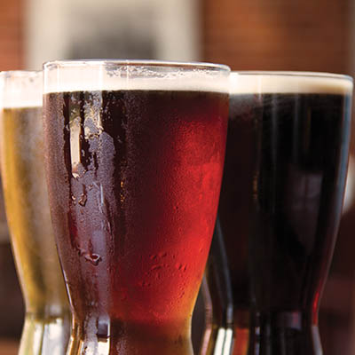
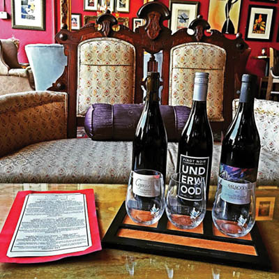
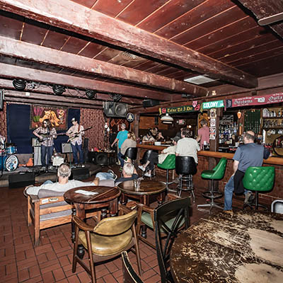
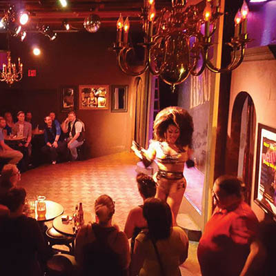
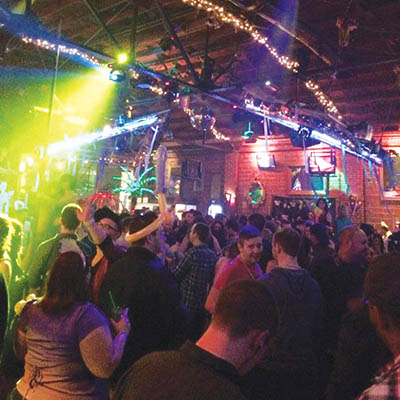
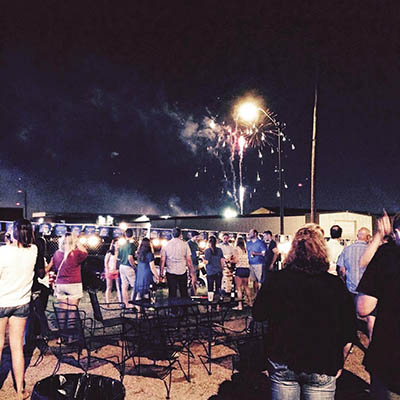
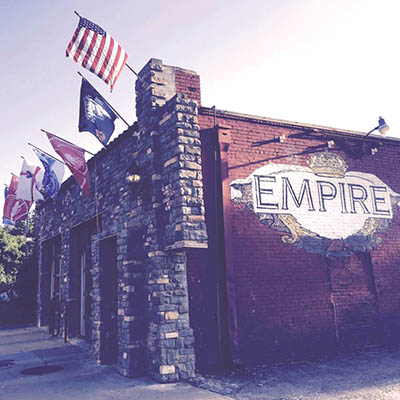
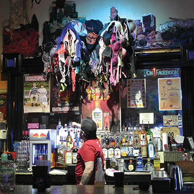

Good libations
A guide to drinking well in Tulsa

Tulsa’s steady revitalization has attracted (and been shaped by) inspired mixologists, sommeliers, craft brewers and new nightlife concepts. Local arts, music and cuisine have rounded out our eclectic bar scene to offer something for every taste and demographic, and plenty of substance for non-drinkers, as well. Though it’s not nearly comprehensive, here is our brief field guide to Tulsa bars.
CRAFT COCKTAILS & SPIRITS
Mixed Company | 302 S. Cheyenne Ave.
Nestled partially below street level in the 96-year-old Midco Building, Mix Co has the feeling of an upscale speakeasy with its warm tones, chic furniture and that huge wooden door that looks like it could be the entrance to a secret meeting place of the Dust-Bowl era Illuminati. That ambience is so welcoming that when a bar-hopping expedition finds itself there, the hopping is likely to be abandoned for sipping a Peanut Old Fashioned until close in the soft glow of the illuminated bar.
At Mix Co you’ll find tasty and inventive house creations like The Longest War (Broker’s Gin, Bastille French Whisky, Antica Carpano, St. Germain, Absinthe rinse and cucumber) and Johnny Ringo (Old Overholt, Tothman and Winters Pear, Ancho Reyes and Amaro Nonino) alongside Sazerac, Pimm’s Cup and other classics. In addition to their one-of-a-kind cocktails, the bar has curated a vast selection of spirits (particularly whiskeys), thoughtful wine and beer lists and monthly tap takeovers.
Mix Co also offers a charming patio, gourmet edibles like cheese and charcuterie boards and a consistently solid lineup of live music and DJs. During the Voice’s 2015 Best of Tulsa voting season, Mix Co proclaimed itself to be Tulsa’s best place for a Tinder date (we tend to agree).
See for yourself Monday through Saturday from 3 p.m.-2 a.m.
Bramble Breakfast & Bar | 311 E. 2nd St
Chimera | 212 N. Main St.
Enso Bar | 104 S. Detroit Ave.
Inner Circle Vodka Bar | 410 N. Main St., Ste. A
Hodges Bend | 823 E. 3rd St.
Voted Best Bartender (Noah Bush) in the 2015 Best of Tulsa awards
Mainline Art & Cocktails | 111 N. Main St.
Saturn Room | 209 N. Boulder Ave.
Valkyrie | 13 E. M.B. Brady St.
Voted Best Craft Cocktail in the 2015 Best of Tulsa awards
Zin Urban Lounge | 111 N. Main St.
BEER

James E. McNellie’s | 409 E. 1st St., 7031 S. Zurich Ave.
Voted Best Beer Selection in the 2015 Best of Tulsa awards
Eleven years in, Elliot Nelson’s flagship pub is still the crown jewel of Tulsa’s beer scene. McNellie’s menu of 360+ beers (60 of those on tap) is unrivaled for sheer volume and breadth of choice. They offer an array of flights with cheeky names—the “Hoppy Gilmore” is a sampling of IPAs; “Army of Darkness” is stouts and porters—as well as weekly pint nights (order the featured beer, keep the glass) and monthly budget draft specials. McNellie’s Beer Geek specials are obscure and exotic enough to satisfy the thrill-seekers, and the bar also offers one of the only beer aging programs in the city, “Ales from the Crypt,” with a limited selection of vintage beers in a temperature-controlled cellar (August’s menu included the Unibroue Grand Reserve 2011 and the Boulevard Saison-Brett 2012).
Coming later this month, McNellie’s new monthly beer menu will, for the first time, categorize beers by flavor profile (the menu was previously arranged by country of origin). The menu will still include the country of origin, along with the ABV measurement and type of glassware. Bar Manager Tony Collins says the regional organization made sense when the menu was created in 2004 because the market was still largely import-driven.
“Since then, craft beer has taken off, and people just in general kind of understand what they like or don’t like in a beer more,” Collins says. “So we’ve organized the information differently.”
McNellie’s hosts and sponsors numerous events throughout the year, from a massive St. Patrick’s Day street party to October’s Harvest Beer Festival and November’s infamous Pub Run (a joint celebration of Guinness and jogging), along with frequent tastings and the ongoing Beer School.
Both McNellie's locations are open seven days a week, 11 a.m. to 2 a.m.
Bar 46 | 107 N. Boulder Ave.
Bull & Bear Tavern | 5800 S. Lewis Ave., Ste. 113
Fassler Hall | 304 S. Elgin Ave.
Voted Best Place to Watch the Big Game, Best Jukebox and Best Karaoke in the 2015 Best of Tulsa awards
The Fur Shop | 520 E. 3rd St.
Kilkenny’s Irish Pub | 1413 E. 15th St.
Voted Best Service in the 2015 Best of Tulsa awards
The Pint on Cherry Street | 1325 E. 15th St., Ste. 107
R Bar & Grill | 3421 S. Peoria Ave.
White Lion Pub | 6927 S. Canton Ave.
WINE

Vintage 1740 | 1740 S. Boston Ave.
Pure plushness and impeccable service set Vintage 1740 apart from the typical boutique watering hole. Luxurious upholstered furnishings and smartly appointed decor manage to make even a casual happy hour at Vintage feel like a special, yet still approachable, occasion.
Vintage’s knowledgeable bartenders take exceptional care of their patrons, so don’t be shy about sampling a few options before you settle on a bottle or glass. Order from a list of more than 60 wines, including the rare selections on their Reserve List, and wine-based cocktails. Vintage also offers cigars, a few gourmet snacks, an intimate patio overlooking 18th and Boston and a private room available for special events.
The bar launches a new wine theme on the first Monday of each month (“Wine Flights around the world”), with a thematic tasting experience each week. For $10, purchase a passport to earn 15 percent off bottle price at Ranch Acres Wine & Spirits with each stamp. A full passport will cover your wine flights the next month.
Vintage is open 4 p.m. to 2 a.m. Monday through Saturday.
Cork | 8922 S. Memorial Dr., Suite C3
Sonoma Bistro & Wine Bar | 3523 S. Peoria Ave.
The Wine Loft at The Vineyard | 7890 E. 106th St. S.
BAR BITES

Crawpappy’s | 3342 E. 51st St.
A self-proclaimed “Cajun and Creole Restaurant,” Crawpappy’s is a bar, first and foremost. Yes, there’s Cajun food, but it’s mostly a bonus to all the drinks flying around in there. This midtown staple has food from the bayou, drinks from Bourbon Street and a loyal, multi-generational base of regular customers. I would imagine there are quite a few people who get their names shouted at them like Norm from “Cheers” when they enter.
Without question, Crawpappy’s menu of New Orleans favorites sets the bar apart—there are far too few watering holes in this town who do bar food as well. The Po Boys are well worth the $5.76 for Catfish, Crawfish, Clams, “Inferno Strips,” Shrimp or Blackened Chicken. Between those and the Oyster Shooters ($5.76 for a half-dozen), less adventurous eaters will find nachos, wraps and even $1 taco night on Thursdays. There’s also no shortage of drinks designed to make you forget where you parked your car, and that’s probably best.
Crawpappy’s is open daily from 11 a.m. to 2 a.m.
Blue Rose Cafe | 1924 Riverside Dr.
Bramble Breakfast & Bar | 311 E. 2nd St.
Crow Creek Tavern | 3534 S. Peoria Ave.
Dust Bowl Lanes & Lounge | 211 S. Elgin Ave.
Fat Daddy's Pub & Grill | 8056 S. Memorial Dr.
Fassler Hall | 304 S. Elgin Ave.
James E. McNellie's | 409 E. 1st St.; 7031 S. Zurich Ave.
Voted Best Bar Food in the 2015 Best of Tulsa awards
Lefty's on Greenwood | 10 N. Greenwood Ave.
Midleton's Bar & Grill | 9711 E. 81st St.
The Parish at Hodges Bend | 823 E. 3rd St.
Pickles Pub & Grill | 4902 S. Sheridan Rd.
The Pint on Cherry Street | 1325 E. 15th St., Ste. 107
R Bar & Grill | 3421 S. Peoria Ave.
The Warehouse Bar and Grill | 3346 S. Peoria Ave.
LIVE MUSIC

The Colony | 2809 S. Harvard Ave.
The ghosts of Tulsa’s music past haunt The Colony—you’ve probably heard the stories: Leon Russell bought the bar as a gift for his wife; a wasted Eric Clapton once performed and then passed out in the back dumpster; George Harrison played an impromptu set; J.J. Cale, too. A lot of the best tales are more legend than fact—few people know what really went on at the midtown haunt during its Tulsa Sound heyday in the ‘70s.
It’s a fact, though, that The Colony has over the past decade once again become an indispensable source of live music and a gathering place for some of our most talented musicians. Owner Brian Fontaine has nurtured the soulful space back to its former glory. Walk in on any given night, and you’ll likely find a handful of local players taking shots and shooting the shit between sets.
Open 4 p.m. to 2 a.m. Monday through Friday, 6 p.m. to 1 a.m. Saturday and Sunday.
Ambassador Lounge | 9457 E. 31st St.
Cellar Dweller | 417 W. 7th St.
Centennial Lounge at VFW Post 577 | 1109 E. 6th St.
Crow Creek Tavern | 2524 S. Peoria Ave.
Downtown Lounge | 25 N. Cheyenne Ave.
Dusty Dog Pub | 5107 S. Harvard Ave.
Elwood's | 1924 Riverside Dr.
Fassler Hall | 304 S. Elgin Ave.
Hodges Bend | 823 E. 3rd St.
Mercury Lounge | 1747 S. Boston Ave.
Nitro Lounge | 1336 E. 6th St.
The Hunt Club | 224 N. Main St.
The Shady Tree| 7970 E. 41st St.
Soundpony | 409 N. Main St.
Voted Best Dive Bar, Best DIY/Underground Venue in the 2015 Best of Tulsa awards
Vanguard | 222 N Main St.
The Venue Shrine | 112 E. 18th St.
Woody's Corner Bar | 325 E. 2nd St.
Yeti | 417 N. Main St.
DINNER & A SHOW

Drag Shows at New Age Renegade | 1649 S. Main St.
Bring your gender to the blender and set to “liquefy” and “pulse.”
Just south of the Inner Dispersal Loop on Main is Tulsa’s decades-old New Age Renegade. The exact opposite of Club Majestic’s full-frontal street view, Renegade’s lack of windows and flat paint job leave much to the imagination. Past the long hallway entry, though, you’ll find one of the best-decorated bars in the state. Mannequins lurk in the shadows, colorful lights flash and TVs blast music videos, and tucked away in the side room is one hell of a stage.
Besides dollar beer Wednesdays and Sunday karaoke (where I once did a horrible version of Fleetwood Mac’s “Gypsy”), Renegade hosts regular drag shows. Some contestants lip sync, some actually sing, and all of them take it pretty damn seriously.
In the event a performance enters buzz-kill territory, you can always head to the patio, which—keeping with the theme—is surrounded by massive privacy fences. The multi-level deck is great in the summer and makes for a sizeable smoke hole during colder weather.
Open daily 4 p.m. to 2 a.m.
Bamboo Lounge | 7204 E. Pine St.
Comedy night
Last Saturday of each month
Centennial Lounge at VFW Post 577 | 1109 E. 6th St.
Comedy night
Wednesdays at 8 p.m.
Elote Cafe & Catering | 514 S. Boston Ave.
Luchadores, Luchaween
happens October 24
Enso Bar | 104 S. Detroit Ave.
Ok, So Tulsa Story Slam
Second Wednesday of each month
Lot No. 6 | 1323 E. 6th St.
Comedy night
Third Thursday of each month at 9 p.m.
Mainline | 111 N. Main St.
Art exhibitions ongoing
check Facebook for details
The Venue Shrine | 112 E. 18th St.
Comedy night
Soundpony | 409 N. Main St.
Comedy night
Usually the last Monday of each month, check soundpony.com for details
DANCE

Club Majestic | 124 N. Boston Ave.
Voted Best Night Club in the 2015 Best of Tulsa Awards
Majestic has one of the most impressive sound systems in Oklahoma.
How do I know this? I live across the street from it.
Even with the doors closed, the club can drown out everything else in the Brady Arts District: that maddening trolley, the off-key singing buskers and the preachers yelling unintelligible Bible verses.
Majestic caters to Tulsa’s LGBTQ community but welcomes everyone, with Thursday drag shows, “Hoe! You Think You Can Dance” and other pageants and parties on Fridays, Saturday dance parties and Talent Night on Sundays. The drinks are abundant, but they aren’t the reason you go there. You go to Majestic to dance like no one is watching (or going to see the replay on your social media accounts). It’s a place to have fun and not be judged—unless you wear that one outfit again.
Come as you are Thursday through Sunday from 9 p.m. to 2 a.m. (Saturday is 21+).
Area 18 Bar and Ultra Lounge | 38 E. 18th St.
Caravan Cattle Company | 7901 E. 41st St.
Cronies | 7875 E. 41st St.
Electric Circus | 222 E. 1st St.
Legends Dance Hall | 514 E. 2nd St.
PATIOS

Inner Circle Vodka Bar | 410 N. Main St., Ste. A
Located across from the Cain’s block, the 7,000-square-foot patio at Inner Circle Vodka Bar offers an unobstructed view of the downtown skyline and a refreshing patch of grass underfoot. Though Inner Circle draws concert-goers from both Cain’s and the Brady Theater, its expansive outdoor space has become an attraction in its own right since it opened this summer (the bar opened in March).
In case Giant Jenga, Giant Connect Four and three Corn Hole sets aren’t enough to keep you occupied, Inner Circle continues to create more reasons to linger on the patio. This month, they’re installing three shipping containers to hold cabana-style seating with furniture, lights and fans. They’ll also introduce a portable outdoor stage for live music, an outdoor screen, Giant Beer Pong and a few other additions. In addition to a full bar of beer, wine and cocktails, Inner Circle offers nearly a dozen different vodka infusions. The adventurous elixirs feature ingredients like cucumber, raspberry, blackberry, mint, pepper and even peanut. (For more on infusions, click here.)
Inner Circle hosts a low-key game night (board games, card games and patio games) on Mondays, live music on Wednesdays and DJs on Fridays. Beginning September 14, weekly Sunday Funday will include a Bloody Mary bar, a champagne cocktail menu, food truck brunch, afternoon live music and nighttime NFL games.
Inner Circle is open 4 p.m. to 2 a.m. Monday through Saturday and 4 p.m. to midnight on Sunday.
Arnie's Bar | 318 E. 2nd St.
Bamboo Lounge | 7204 E. Pine St.
Blue Rose Cafe | 1924 Riverside Dr.
Voted Best Spot for Day Drinking in the 2015 Best of Tulsa Awards
El Guapo's Cantina | 332 E. 1st St.
Elwood's | 1924 Riverside Dr.
Empire | 1516 S. Peoria Ave.
Fifteen Below | 1334 E. 15th St.
Full Moon Cafe | 1525 E. 15th St.
Mercury Lounge | 1747 S. Boston Ave.
Mixed Company | 302 S. Cheyenne Ave.
The Penthouse Bar at The Mayo Hotel | 115 W. 5th St.
Voted Best View in the 2015 Best of Tulsa awards
R Bar & Grill | 3421 S. Peoria Ave.
Saturn Room | 209 N. Boulder Ave.
Soundpony | 409 N. Main St.
Voted Best "Unofficial" Public Art (Soundpony patio) in the 2015 Best of Tulsa awards
The Venue Shrine | 112 E. 18th St.
Vintage 1740 | 1740 S. Boston Ave.
Yellow Brick Road Pub | 2630 E. 15th St.
Yeti | 417 N. Main St.
DOG FRIENDLY SPOTS

Empire | 1516 S. Peoria Ave.
Widely known as Tulsa’s soccer bar of record, Empire has been dog friendly since owner Kyla Holderness opened the bar 19 years ago. At the time, welcoming animals into service establishments was nearly unheard-of. Holderness’s response to patrons who are bothered by the canine presence: “They’re cleaner than probably most people that come in."
A devoted animal rescuer, Holderness has volunteered with Pet Adoption League for about 14 years and OKC-based Homeward Bound Pug Rescue for a decade. She’s currently fostering more than a dozen dogs and has even transported rescues to no-kill shelters around the country (in the same van she uses to shuttle patrons between Empire and Oktoberfest).
If you’re bringing a furry drinking buddy, heed a few common-sense rules: Leash, supervise and clean up after your dog; leave aggressive dogs at home; and abide by Empire’s 8 p.m. Furfew, after which time nightlife creates a stressful environment for critters.
Open daily from 3 p.m. to 2 a.m.
Caz’s Pub | 21 E. M.B. Brady St.
Elwood’s | 1924 Riverside Dr.
Fassler Hall | 304 S. Elgin Ave.
The Fur Shop | 520 E. 3rd St.
Lucky’s on the Green | 111 E. M.B. Brady St.
Mercury Lounge | 1747 S. Boston Ave.
Soundpony | 409 N. Main St.
SMOKING

Caz’s Pub | 21 E. M.B. Brady St.
Opened in 1995 or the year 17 BGG (before Guthrie Green), Caz’s was among the early residents of the Brady Arts District as we know it today. It now represents a grounding connection to when the area was quieter and rougher around the edges and there wasn’t a new bar or condo development going up around the corner every other week. It’s clear from the countless signatures, tags and other bits of good times past scrawled on the walls or scratched into tables (Are Ryan + Tina ‘02 still together? We believe in you!); the boat railing hung on the wall; and the ever-growing collection of bras on the antlers behind the bar: Caz’s has been there, and its patrons have done that.
No matter how much our downtown grows or how many gastropubs or artisan boutiques move into the neighborhood, as long as it’s there, Caz’s will be Caz’s. Get a drink, play a song on the jukebox, buy a pack of smokes from the machine, shoot some pool, have a tamale (on Mexican Mondays) and reflect on how the block has changed.
Caz’s is open 2 p.m.-2 a.m. Monday through Saturday and Sunday from 5 p.m.-2 a.m. Happy hour ends at 7 p.m., with free food on Mondays and Fridays.
Another Round | 3307 S. Peoria Ave.
Arnie’s Bar | 318 E. 2nd St.
The Brook Alley | 4726 S. Peoria Ave.
The Buckaneer | 1120 S. Harvard Ave.
The Cigar Box | 1326 E. 15th St.; 4932 E. 91st St.; 500 Riverwalk Terrace, Ste. 155; 409 W Stonewood Dr.
Crawpappy’s | 3342 E. 51st St.
Crow Creek Tavern | 3534 S. Peoria Ave.
Drake’s Tavern | 1546 E. 15th St.
James E. McNellie’s (upstairs) | 409 E. 1st St.
Mercury Lounge | 1747 S. Boston Ave.
On the Rocks | 3120 S. Yale Ave.
Pickles Pub & Grill | 4902 S. Sheridan Rd.
Tin Dog Saloon | 3245 S. Harvard Ave.
Yellow Brick Road Pub | 2630 E. 15th St.
Yeti (venue side) | 417 N. Main St.
Enjoy reading long lists of fun stuff? Check out the 2015 Best of Tulsa awards.
.jpg)
.jpg)